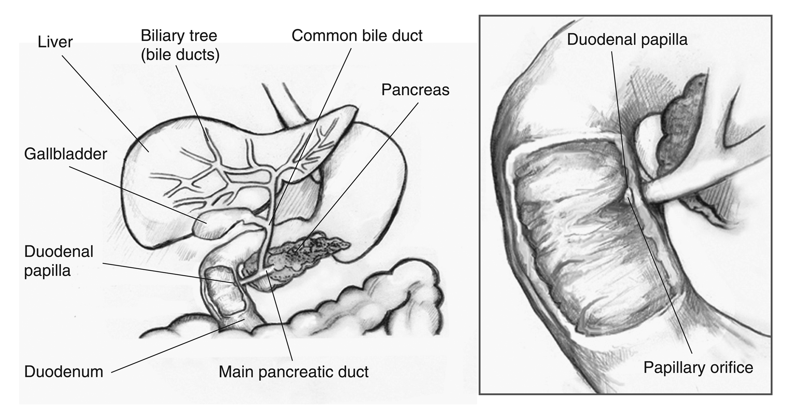
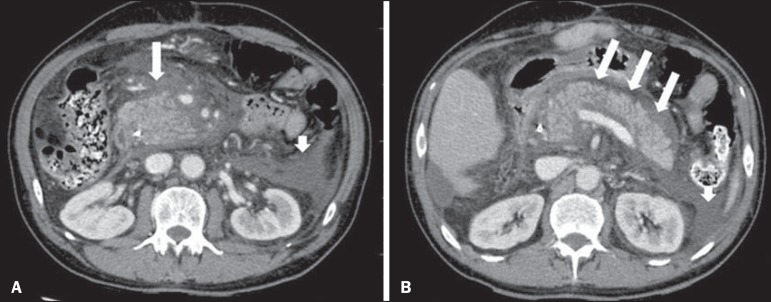
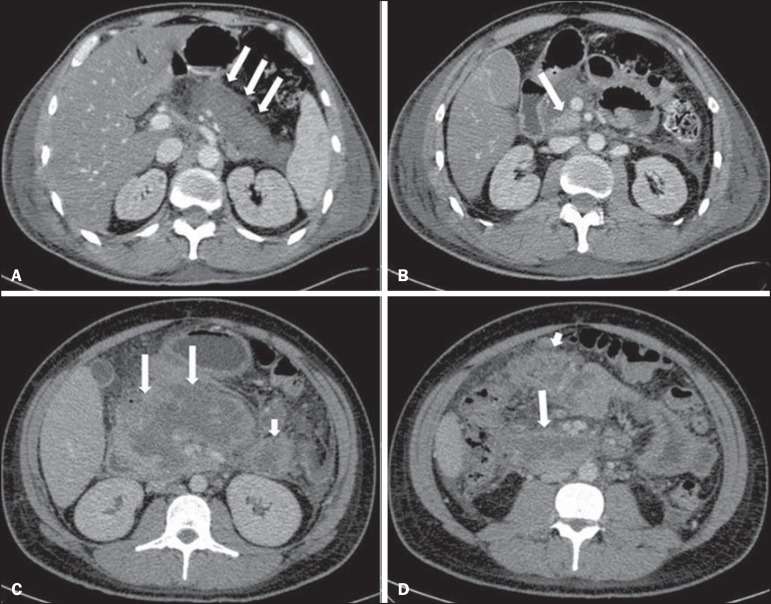

定義與定位
這個病是什麼？在分類樹的哪個位置？跟隔壁的病靠什麼分開？
| 項目 | 重點 |
|---|---|
| 本質 | 胰蛋白酶原（trypsinogen）在腺泡細胞內提早轉成 trypsin → 連鎖活化其他酵素 → 胰臟自我消化 ＋ 細胞激素風暴 |
| 兩大型態 | 間質水腫型（interstitial edematous）約 90%；壞死型（necrotizing）約 5–10%（收案較寬的研究可達 20%）——壞死型才是死亡率的來源 |
| 好發族群 | 中年以上；膽源性偏女性、酒精性偏男性；高三酸甘油酯型常合併肥胖、糖尿病控制不良 |
| 分類位置 | 與 Pancreatic cancer、慢性胰臟炎同屬胰臟疾病；急性是「可逆的自我消化」，慢性是「不可逆的纖維化」 |
| 病程分期 | **早期（第 1 週）**由 SIRS 與器官衰竭主導；晚期（第 1 週之後）由局部積聚、感染與併發症主導。另有一條獨立的時間軸：4 週是局部積聚有無成熟包膜的分界 |
病因與機制
為什麼會發生？病生理鏈條長什麼樣？——這一節寫好，下面的嚴重度與併發症就不用背。
flowchart TD A["膽結石阻塞、酒精等誘因"] --> B["腺泡細胞內<br/>trypsinogen 提早活化"] B --> C["胰臟自我消化<br/>間質水腫或壞死"] C --> D["腹腔內脂肪壞死<br/>皂化反應消耗血鈣"] C --> E["細胞激素大量釋放<br/>全身發炎反應"] E --> F["微血管通透性上升<br/>液體跑進第三間隙"] F --> G["血管內容積不足<br/>BUN 上升、腎前性腎衰竭"] E --> H["器官衰竭<br/>呼吸、腎臟、循環"] classDef key fill:#263238,stroke:#000,color:#fff,font-weight:bold class H key
病因骨架：五類就記得完
| 分類 | 代表病因 | 記憶點與門檻 |
|---|---|---|
| 阻塞 | 膽結石／膽泥（40–70%，第一名）、CBD stone↗、壺腹周圍腫瘤（見 Pancreatic cancer）、pancreas divisum | ALT >3× ULN 對膽源性的陽性預測值極高；每位病人都要做 Abdominal ultrasound↗ |
| 毒性 | 酒精（25–35%，第二名）、藥物 | 酒精多是長期大量飲用者的急性發作，不是單次狂飲 |
| 代謝 | 三酸甘油酯 >1,000 mg/dL、高血鈣（見 Hypercalcemia） | TG 500–1,000 屬風險區、>1,000 才算病因；高血鈣常來自副甲狀腺功能亢進 |
| 醫源／外傷 | ERCP↗ 後、腹部手術、腹部鈍傷 | ERCP 後胰臟炎是該檢查最常見的併發症 |
| 免疫／感染／遺傳 | IgG4 相關自體免疫性胰臟炎、mumps／CMV、PRSS1 與 SPINK1 突變、蠍毒 | IgG4 型：無痛性黃疸＋影像「香腸狀」胰臟＋類固醇有效，要跟胰臟癌分開 |

總膽管（common bile duct）與主胰管（main pancreatic duct）在十二指腸乳頭前匯流；結石若卡在共同出口，可同時阻斷膽汁與胰液，因而並見黃疸與胰臟炎。Source: NIDDK Media Library — Biliary system；credit: National Institute of Diabetes and Digestive and Kidney Diseases, National Institutes of Health。臨床表現
典型病人長什麼樣？哪些症狀是幾乎一定有、哪些是提示性的？
- 典型：持續性上腹痛、穿透到背部、身體前傾會稍緩解；噁心嘔吐（吐完不會緩解，與腸胃炎相反）；上腹壓痛、腸音減弱
- 提示性：Fever 與心搏過速（早期多是無菌性 SIRS，不等於感染）、黃疸（提示膽源性，見 Jaundice）、左側肋膜積液（滲出液且澱粉酶高，見 Pleural fluid analysis）
- 少見但重要：**Cullen sign（臍周瘀斑）**與 Grey Turner sign（側腹瘀斑）——代表後腹腔出血，罕見但預後差；低血鈣造成的手足抽搐；皮下脂肪壞死性結節；Shock 與呼吸衰竭
→ 相關主訴流程：Abdominal pain↗、RUQ pain
診斷
三取二。不是三項全要，也不是酵素一項說了算。
| 診斷條件（符合 2 項即成立） | 內容 |
|---|---|
| ① 症狀 | 急性發作、持續的上腹痛，常穿透至背部 |
| ② 血清酵素 | lipase 或 amylase >3× 正常上限（ULN） |
| ③ 影像 | 增強 CT、MRI 或超音波呈現急性胰臟炎的特徵 |
要開的檢查：Abdominal ultrasound↗（每位病人都要做，找膽結石與膽管擴張）、血液常規與生化（BUN、Cr、Ca、Hct、ALT、bilirubin）、三酸甘油酯與血鈣（找病因）、Arterial blood gas（懷疑低血氧或 ARDS 時）
| 間質水腫型（interstitial edematous） | 壞死型（necrotizing） |
|---|---|
 |
 |
左：胰臟瀰漫腫大但實質仍顯影，長箭頭標示周胰脂肪絮狀混濁，短箭頭為急性液體積聚，沒有實質壞死。右：A 的胰頸、體、尾呈瀰漫性低顯影，B 僅鉤突仍保留顯影；C、D 的長箭頭標示廣泛胰實質壞死，短箭頭標示胰外脂肪壞死。Source: Cunha et al., Radiologia Brasileira 2014, Figures 1 and 3（CC BY-NC）。
嚴重度分級
入院第一天算 BISAP；滿 48 小時後才用 Atlanta 定案。
BISAP：五個字母各配一個變數
| 字母 | 項目 | 判準 |
|---|---|---|
| B | BUN | > 25 mg/dL |
| I | Impaired mental status | 意識障礙（GCS < 15） |
| S | SIRS | 符合 ≥2 項：體溫 <36 或 >38°C、心跳 >90、呼吸 >20 或 PaCO₂ <32 mmHg、白血球 <4,000 或 >12,000 或未成熟型 >10% |
| A | Age | > 60 歲 |
| P | Pleural effusion | 胸部影像可見肋膜積液 |
Revised Atlanta 分類（2012）：看器官衰竭「撐多久」
| 級別 | 定義 |
|---|---|
| 輕度 mild | 無器官衰竭、無局部或全身併發症 |
| 中重度 moderately severe | 暫時性器官衰竭（≤48 小時）或有局部／全身併發症 |
| 重度 severe | 持續性器官衰竭（>48 小時，單一或多重器官皆算） |
器官衰竭以 modified Marshall score ≥2 定義，只評呼吸(PF ratio, ARDS)、腎臟AKI、心血管MAP三個系統。48 小時是 Atlanta「嚴重度分級」唯一的時間門檻（另有 1 週用於病程分期、4 週用於積聚命名，三條時間軸不要互相污染）；嚴重度不是由 CT Severity Index、也不是由 Ranson 或 APACHE II 的分數本身決定。
併發症 vs 病因：不可混淆
這是最反直覺、也最容易被寫成錯誤選項的地方——先問一句「這是因還是果」。
| 系統 | 病因（因） | 併發症（果） |
|---|---|---|
| 膽道 | 膽結石、CBD stone↗、膽泥 | 少見的膽道狹窄 |
| 代謝 | 三酸甘油酯 >1,000、高血鈣（Hypercalcemia） | 早期低血鈣（脂肪皂化）、慢性化後糖尿病、外分泌功能不足 |
| 毒性／醫源 | 酒精、藥物、ERCP↗ 後、腹部外傷 | — |
| 局部積聚 | — | 假性囊腫（pseudocyst）、包覆性壞死（walled-off necrosis, WON）、感染性壞死 |
| 血管 | — | 脾靜脈血栓 → 孤立性胃底靜脈曲張、假性動脈瘤破裂造成腹腔內出血 |
| 胰管 | pancreas divisum、壺腹腫瘤 | 胰管狹窄或中斷（disconnected pancreatic duct syndrome）→ 反覆發作、胰源性腹水與胸水 |
4 週是那條分界線
| 期別 | 局部積聚的命名 | 全身與其他 |
|---|---|---|
| 早期（<4 週，無成熟包膜） | 水腫型 → acute peripancreatic fluid collection（APFC）；壞死型 → acute necrotic collection（ANC） | SIRS、器官衰竭（呼吸／腎／循環）、ARDS、急性腎損傷（嚴重時需 Dialysis）、低血鈣、Shock |
| 晚期（>4 週，有成熟纖維包膜） | 水腫型 → pseudocyst；壞死型 → walled-off necrosis（WON） | 感染性壞死、脾靜脈血栓、胰管狹窄或中斷、慢性化後的外分泌功能不足與糖尿病 |
鑑別診斷
要跟誰分清楚？靠什麼分？
| 要排除的 | 支持它的線索 | 怎麼排除 |
|---|---|---|
| Acute cholangitis↗ | Charcot 三徵：發燒＋黃疸＋右上腹痛；bilirubin 明顯上升 | 兩者可並存；一旦並存就要緊急 ERCP↗ |
| CBD stone↗ 單純阻塞 | 疼痛偏絞痛型、酵素不到 3× ULN | 影像看膽管擴張；MRCP 或超音波內視鏡 |
| 消化性潰瘍穿孔 | 突發如刀割、板狀腹、立位影像有游離空氣 | 立位胸腹 X 光或 CT |
| 腸繫膜缺血 | 「痛得比壓痛還誇張」、代謝性酸中毒、乳酸上升 | amylase／lipase 也會升，是最容易誤判的一組；靠 CT 血管攝影 |
| 下壁心肌梗塞 | 上腹不適＋噁心、冷汗、心電圖 ST 上升 | 到院先做心電圖 |
| Pancreatic cancer | 年長、體重減輕、無痛性黃疸、反覆發作或不明原因胰臟炎 | 影像追蹤；50 歲以上首次不明原因胰臟炎要想到它 |
治療
重點是把血流撐住、把腸子用起來、把病因處理掉——沒有一個藥能「治」胰臟炎本身。
| 情境 | 處置 |
|---|---|
| 輸液（核心） | 乳酸林格液（LR）優於生理食鹽水；中度而非過度輸液：血容量正常者約 1.5 mL/kg/h，有低血容徵象者先給 10 mL/kg bolus |
| 輸液的追蹤 | 6 小時與 24–48 小時各重評一次：BUN 趨勢、Hct、尿量、生命徵象。改善就降速，不是一路灌到底 |
| 止痛 | 積極給鴉片類（morphine 不是禁忌；「morphine 會讓 Oddi 括約肌收縮所以不能用」是過時說法） |
| 營養 | 輕症：24–48 小時內、可耐受即開始經口低脂固體飲食，不必等酵素正常。無法經口者用鼻胃或鼻空腸管腸道餵食；全靜脈營養只留給腸道完全用不了的人 |
| 抗生素 | 不常規預防性給——即使是壞死性胰臟炎。只在證實感染時才給能穿透壞死組織者（carbapenem、metronidazole、fluoroquinolone） |
| 膽石性＋合併急性膽管炎 | 24 小時內緊急 ERCP↗ 加括約肌切開取石（這是 24 小時門檻的唯一適應症） |
| 膽石性＋持續膽道阻塞但無膽管炎 | 不適用 24 小時門檻；先以 MRCP 或 EUS 確認結石，住院期間安排 ERCP 並完成膽囊切除 |
| 膽石性、無膽管炎 | 先保守治療；穩定後於同次住院內完成膽囊切除 |
| 高三酸甘油酯型 | 禁食、靜脈胰島素輸注（合併高血糖時）；血漿置換不建議常規使用——證據顯示除快速降低 TG 數值外未改善器官衰竭或死亡率，僅在極重症、其他方法無效時個案考量（見 Dialysis 的體外治療脈絡）；穩定後長期 fibrate，目標空腹 TG ＜500 mg/dL（Endocrine Society 以 TG ＞500 為啟動藥物治療的門檻） |
| 壞死需引流時 | 能等就等到 4 週以上（包膜成熟後併發症與死亡率較低），採階梯式（step-up）：先內視鏡或經皮引流 → 必要時才清創，不是一開始就開腹 |
預後
- 整體死亡率隨族群與年代差異大：近年大型資料多為 1–2%，教科書慣用值約 5%；壞死性胰臟炎約 15%；感染性壞死 20–40%
- 死亡呈雙峰：早期死於 SIRS 與多重器官衰竭，晚期死於感染性壞死與敗血症
- 最重要的預後因子是「器官衰竭有沒有持續超過 48 小時」，不是酵素數值、不是 CT 分數
- 首次酒精性急性胰臟炎後約 1/4 會再度發作、約 15–30% 在數年內進展為慢性胰臟炎（外分泌功能不足＋糖尿病），合併抽菸者風險最高；戒酒與戒菸是最有效的兩項介入
禁忌與陷阱
相關連結
- Hypercalcemia — 代謝性病因之一；胰臟炎本身早期反而會低血鈣
- CBD stone↗、Acute cholangitis↗ — 膽源性的上游與最危險的併發情境，決定要不要緊急 ERCP↗
- ERCP↗ — 既是治療手段，也是本病的醫源性病因
- Abdominal ultrasound↗ — 每位病人都要做的找病因第一站
- Pancreatic cancer — 50 歲以上不明原因或反覆發作時必須排除
- Shock、Dialysis、Arterial blood gas — 重症期的循環、腎臟、呼吸三條戰線
- Pleural fluid analysis — 左側肋膜積液為澱粉酶高的滲出液；也是 BISAP 的「P」
- Jaundice、RUQ pain、Abdominal pain↗、Fever — 相關主訴的鑑別流程
- Cirrhosis、MASLD — 同為酒精與代謝共病譜系的鄰居
- 禁忌選項 — 跨科的「絕對不可」總表